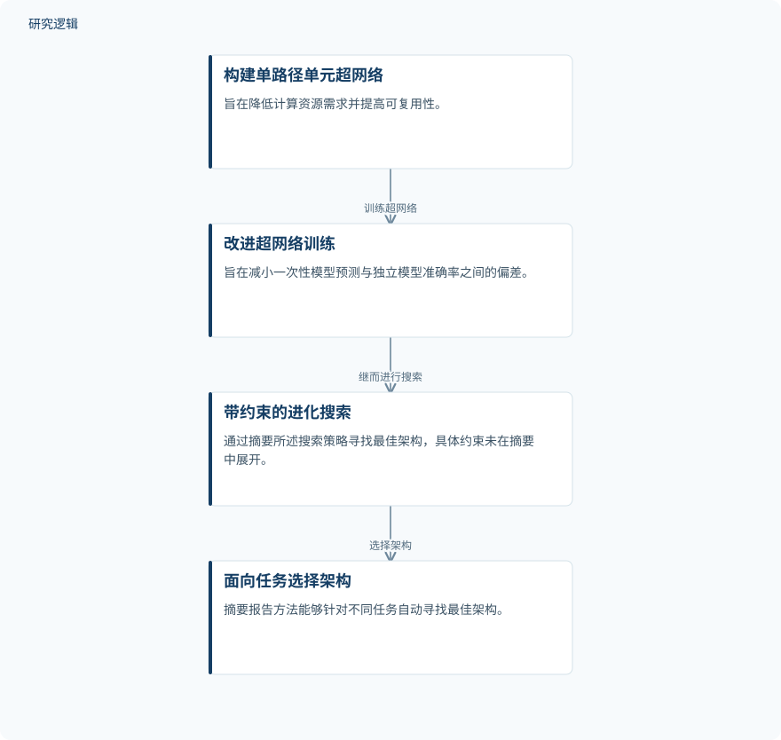

摘要解读
面向物理信息故障诊断的单路径单元进化式一次性神经架构搜索方法
An Evolutionary One-Shot Neural Architecture Search Method Based on Single-Path Cells Toward Physics-Informed Fault Diagnosis
解读更新 2026-11-10 17:47 · 依据公开摘要整理，未核验全文细节
面向物理信息故障诊断，网络结构如何选，可能直接影响模型表现。这项研究提出SPC-NAS，尝试同时缓解架构搜索中的计算资源限制与超网络预测偏差；阅读重点是区分已经报告的诊断结果与未来融合物理信息的目标。
文章目录
架构选择为何成为故障诊断的障碍
复杂装备的故障诊断需要有效的模型，物理信息故障诊断则是摘要指出的新兴方向。但实现这一方向仍面临多种问题，其中之一是寻找合适的网络架构：结构选择会显著影响模型性能。
神经架构搜索（NAS）为自动选择结构提供了途径，但摘要指出，计算资源限制与超网络预测偏差可能使搜索错过最佳架构。因此，问题不仅是扩大搜索范围，还包括如何让搜索阶段的性能判断更加可靠。
单路径单元、训练改进与约束搜索
作者提出基于单路径单元的进化式一次性神经架构搜索方法SPC-NAS。首先构建基于单路径单元的新超网络，旨在降低计算资源需求并提高可复用性。
随后，方法引入改进的超网络训练方式，以减小一次性模型预测与独立模型准确率之间的偏差；最后通过带约束的进化搜索寻找最佳架构。摘要明确了这些环节的衔接，但没有展开单元结构、训练规则及约束的具体定义。
依据摘要整理的SPC-NAS研究过程


仅概括摘要明确给出的方法环节及其关系，不表示论文原图，也不补充具体训练配置或约束条件。
下载 SVG图示关系说明
实线表示相邻阶段的信息流，虚线表示跨阶段联系或反馈。
构建单路径单元超网络 → 改进超网络训练：训练超网络；改进超网络训练 → 带约束的进化搜索：继而进行搜索；带约束的进化搜索 → 面向任务选择架构：选择架构
CWRU结果呈现准确率与参数规模
摘要报告，该方法能够针对不同任务自动寻找最佳架构，并在凯斯西储大学（CWRU）数据集上，以0.292 M参数取得100%的准确率。这是当前资料中明确给出的性能与模型规模结果。
这里的“最佳架构”应理解为作者对其搜索与实验结果的表述，不能据此认定获得了所有可能架构中的全局最优。摘要将研究意义落在为未来融合物理信息方法提供基础，而非宣称已经完成并验证这种融合。
摘要尚不足以界定结果适用范围
本次解读仅依据完整摘要。摘要未交代样本数量、数据划分、任务构成及训练测试条件，因此无法判断100%准确率对应的具体评估难度，也不能将其外推为真实装备或跨工况诊断能力。
摘要也未提供比较方法、重复验证安排、搜索计算成本及预测偏差的量化结果，因而不足以判断各项改进的独立贡献。这些是当前资料的判断边界，并不意味着论文没有开展相关比较或验证。
阅读启发：先看搜索可信度，再看物理融合
阅读启发：值得进一步关注超网络预测与独立模型准确率如何对应，以及带约束的搜索究竟限制了什么。这些细节有助于理解，为何搜索过程能够筛选出最终报告的架构。
建议：面向智能运维阅读时，应把架构自动选择与物理信息融合分开判断。前者已有摘要报告的结果，后者仍是摘要指向的后续结合方向；不能仅凭研究面向物理信息诊断，就认定模型已具备物理一致性。
以上为本站阅读启发与建议，不是论文已验证的结论。